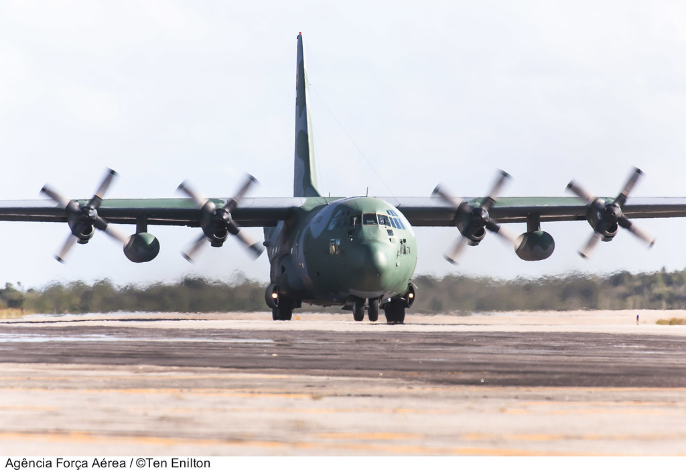

SOBRE A AERONAVE
O Hércules, cujo primeiro voo ocorreu em 1954, é o avião produzido por mais tempo na história.
Desde então, mais de 2.500 exemplares foram produzidos para cerca de 70 operadores militares em versões de transporte tático, busca e salvamento, reabastecimento em voo e muitas outras. O C-130 J, o modelo mais recente, ainda estava em produção em 2015.
A FAB recebeu um total de 29 exemplares das versões C-130E (8), SC-130E (3), C-130H (16) e KC-130H (2) que passaram por dois programas de atualização. É previsto que os Hércules da FAB serão substituídos pelo Embraer KC-390, maior e mais veloz. O exemplar do MUSAL é o FAB-2453, um C-130E modernizado para o padrão C-130H. Foi incorporado em 2014.
Especificações Técnicas
Fabricante: Lockheed Aircraft Corporation (EUA)
Motor: 4 x turboélice/turboprops Allison T65-A-15 (4.591 shp cada/each)
Comprimento: 29,3 m
Envergadura: 39,7 m
Altura: 11,9 m
Velocidade Máxima: 590 km/h
Carga Máxima: 19 t

FONTE: clique aqui
ASSISTA A UM VÍDEO DA AERONAVE AQUI: clique aqui
voltar